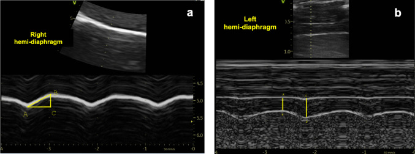
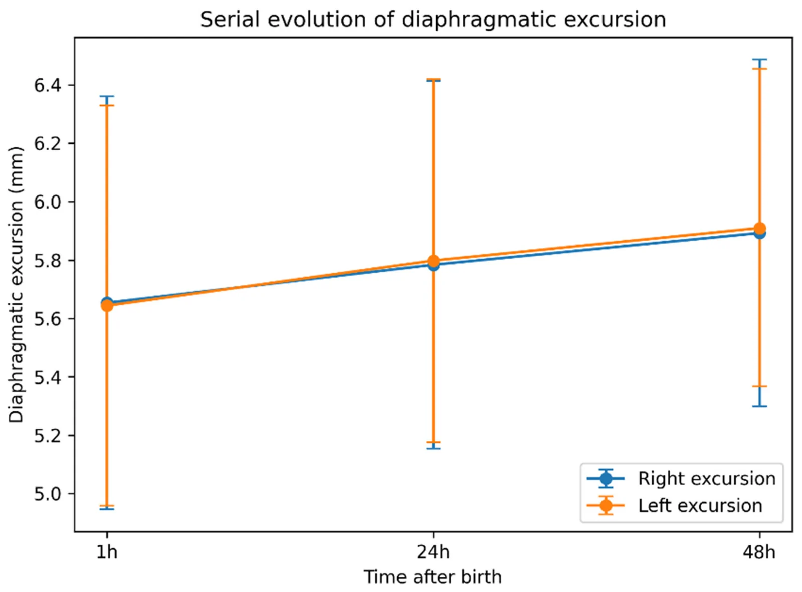
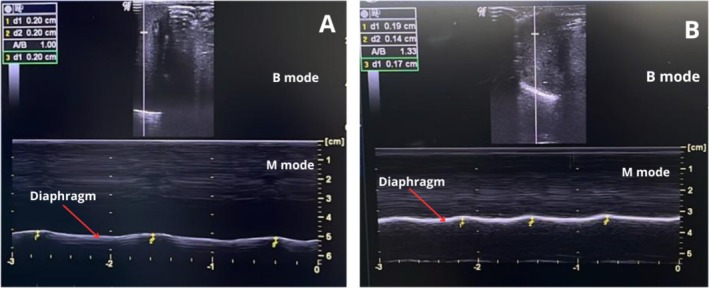

1850 — Siêu âm cơ hoành dự báo cai máy ở trẻ sơ sinh/trẻ nhỏ / Diaphragm ultrasound for weaning in neonates and infants
Tags: pattern:giam-bien-do-hoanh pattern:giam-phan-suat-day pattern:teo-co-hoanh pattern:cai-may-that-bai pattern:giam-thong-khi-day-phoi vung:co-hoanh vung:phoi score:DTF score:DE protocol:SA-co-hoanh-so-sinh protocol:cai-may incidentaloma:khong
Mức chắc chắn (certainty): tổng hợp y văn (literature synthesis) — số liệu từ một đoàn hệ 112 trẻ đủ tháng khỏe (PMC13565314), một nghiên cứu 20 trẻ đủ tháng (PMC13005841), một nghiên cứu trẻ sinh non RDS thở máy (PMC12397845), một phân tích gộp 14 nghiên cứu/657 trẻ (PMC12927438), một phân tích gộp 11 nghiên cứu/828 nhũ nhi (PMC10511769), một đoàn hệ 53 trẻ có kết quả âm tính (PMC10081691) và một tổng quan kỹ thuật (PMC13418936). Chỗ chưa có ngưỡng chuẩn được ghi rõ là chưa rõ — cần tra, không suy ra số.
Câu chốt: đừng bê ngưỡng người lớn sang trẻ sơ sinh. Ở 112 trẻ đủ tháng khỏe, biên độ cơ hoành (diaphragmatic excursion, DE) chỉ 5,65 mm lúc 1 giờ → 5,91 mm lúc 48 giờ (PMC13565314) — nếu áp ngưỡng người lớn DE < 10 mm = bất thường, toàn bộ trẻ sơ sinh sẽ bị gọi là suy cơ hoành. Giá trị thật của siêu âm cơ hoành ở trẻ không nằm ở một con số tuyệt đối, mà ở xu hướng theo thời gian, so hai bên, và kết hợp với siêu âm phổi (LUS) — vì trong phân tích gộp, LUS dự báo cai máy tốt hơn (Se 0,88/Sp 0,81; PMC10511769) và DTF chỉ có AUC 0,63 ở trẻ nói chung, dù 0,82 ở nhũ nhi (PMC12927438).
1. Tổng quan bệnh học – cơ chế hình ảnh
1.1 Vì sao cơ hoành trẻ sơ sinh "khác về lượng" chứ không khác về nguyên lý
- Cơ hoành vẫn là cơ hô hấp chính, co thì hạ thấp và dẹt vòm → tạo áp lực âm. Nhưng ở trẻ sơ sinh: lồng ngực nhỏ, thành ngực mềm, phổi dễ xẹp, tần số thở cao → cơ hoành làm việc gần ngưỡng mỏi, và mọi bất thường cơ học đều biểu hiện nhanh.
- Vì vậy cùng một bệnh cảnh "cai máy thất bại" có thể do: teo cơ do thở máy (VIDD), liệt thần kinh hoành sau mổ tim, ứ khí/BPD, tràn dịch – chướng bụng, hoặc giảm drive do an thần. Siêu âm giúp phân tầng cơ chế, không chỉ "đo cho có".
1.2 Vật lý: siêu âm thấy gì và tại sao thấy được
- B-mode tần số cao (10–15 MHz, đầu dò linear/hockey stick): cơ hoành là dải giảm âm kẹp giữa màng phổi (tăng âm) và màng bụng (tăng âm); đo Tdi ở vùng áp thành, nơi cơ áp sát thành ngực/bụng.
- M-mode: ghi vị trí vòm hoành theo thời gian → đo DE (mm) và hướng đi. Vì M-mode lấy mẫu rất nhanh theo một đường, nó bắt được chuyển động nhanh của trẻ sơ sinh — điều B-mode 2D dễ bỏ sót.
- DTF (diaphragmatic thickening fraction) = (Tdi hít vào − Tdi thở ra)/Tdi thở ra × 100. TẠI SAO DTF phản ánh chức năng: khi cơ co, các sợi cơ ngắn lại nhưng dày lên (thể tích cơ gần như không đổi) → độ dày tỷ lệ với lực co. Nhưng DTF phụ thuộc tải và gắng sức: trẻ gắng mạnh có DTF cao dù cơ teo; trẻ an thần/PEEP cao có DTF thấp dù cơ bình thường.
- Giới hạn vật lý: DE đo trên một đường M-mode — nếu đầu dò không vuông góc với vòm hoành hoặc trẻ vặn mình, số đo thấp giả. Đây là lý do tư thế và hợp tác quan trọng hơn ở người lớn.
1.3 Số liệu nền (bắt buộc thuộc)
| Chỉ số | Số | Nguồn |
|---|---|---|
| DE ở trẻ đủ tháng khỏe (112 trẻ) | 5,65 → 5,91 mm (1 → 48 giờ) | PMC13565314 |
| DE ở trẻ đủ tháng khỏe (20 trẻ), ngày 1 so ngày 3 | ổn định, không khác biệt; mổ đẻ thấp hơn ngày 1, bằng nhau ngày 3 | PMC13005841 |
| Độ tin cậy trong cùng người đo | ICC > 0,90 với hầu hết chỉ số | PMC13005841 |
| Trẻ sinh non RDS thở máy | Tdi, DTF, DE giảm có ý nghĩa trong thời gian thở máy (p < 0,0001; p = 0,01; p = 0,02) | PMC12397845 |
| DTF tương quan với thời gian thở máy / nằm viện / nguy cơ đặt lại ống | R = 0,62 / 0,52 / 0,55 | PMC12397845 |
| Phân tích gộp trẻ em (14 nghiên cứu, 657 trẻ) | DTF AUC 0,63; nhũ nhi 0,82; DE AUC 0,72; thất bại cai máy 26,9% | PMC12927438 |
| Phân tích gộp nhũ nhi (11 nghiên cứu, 828 trẻ) | LUS Se 0,88/Sp 0,81; DE DOR 13,17; DTF AUROC 0,86 | PMC10511769 |
| Đoàn hệ âm tính (53 trẻ) | DTF trước cai máy 15,2%, không liên quan thành công (OR 0,33; 0,06–1,86); teo cơ 17/53 | PMC10081691 |
2. Mẫu hình + chẩn đoán phân biệt theo cơ chế (gamut)
- Mẫu hình: DE thấp và/hoặc DTF thấp ở trẻ đang được xem xét cai máy, thường kèm thở nhanh nông, co kéo, không cai được máy.
- Gamut theo cơ chế:
- Teo do bất động (VIDD): thở máy kiểm soát kéo dài, an thần sâu, giãn cơ; Tdi/DTF giảm dần, hai bên; xem bài 1776.
- Liệt thần kinh hoành: sau mổ tim bẩm sinh (4,7% trong 2.280 ca; PMC13142676), chấn thương ngực, u trung thất; một bên, nghịch thường; xem bài 1849.
- BPD/ứ khí: phổi ứ khí, hoành dẹt, DE thấp nhưng DTF có thể bảo tồn — không phải teo cơ; xem bài 606.
- Cơ học: tràn dịch màng phổi, chướng bụng/ascites, PEEP cao → DE thấp giả tạo.
- Giảm drive trung ương/an thần: DTF thấp, cải thiện khi giảm an thần.
- Bất thường cấu trúc: giãn cơ hoành (eventration), thoát vị hoành bẩm sinh (CDH) đã mổ; xem bài 608.
- Gợi nhớ: A-B-C-D-E — Atrophy (VIDD), Bronchopulmonary dysplasia, Central drive, Diaphragm palsy, Effusion/abdomen.
3. Bảng so sánh phân biệt (ma trận đối chiếu)
| Thực thể (entity) | Hình ảnh điển hình (SA/CT) | Chốt vào (rule-in) | Chốt loại (rule-out) | Gợi ý xác nhận |
|---|---|---|---|---|
| VIDD/teo do thở máy | Tdi mỏng dần, DTF thấp, DE giảm, hai bên; không nghịch thường | Tdi giảm > 10% so với nền hoặc DTF < 20% sau nhiều ngày thở máy | DE/DTF bình thường hoặc chỉ một bên → không phải VIDD | Siêu âm lặp lại, so ngày đầu (bài 1776) |
| Liệt thần kinh hoành | Một bên DE thấp, nghịch thường, bên lành bù; Tdi có thể bình thường | Nghịch thường khi hít vào/sniff + bối cảnh mổ tim | Hai bên đều giảm, không nghịch thường → VIDD | M-mode + sniff; điện sinh lý (bài 1849) |
| BPD/ứ khí | Hoành dẹt, DE thấp, DTF bảo tồn, phổi ứ khí | DTF ≥ 20% + hình ảnh BPD | DTF rất thấp + Tdi mỏng → teo cơ | X-quang/CT, LUS (bài 606) |
| Tràn dịch/chướng bụng | DE giảm giả tạo, DTF bình thường, dịch màng phổi/ổ bụng | DTF bình thường + lượng dịch lớn | DTF < 20% + Tdi mỏng → bệnh cơ thật | Siêu âm màng phổi/ổ bụng |
| Giảm drive/an thần | DE thấp, DTF thấp, không nghịch thường | Cải thiện ngay sau giảm an thần/thức | Không cải thiện → nguyên nhân cơ/ thần kinh | Đáp ứng lâm sàng, EEG nếu nghi |
| Giãn cơ hoành/CDH sau mổ | Hoành cao nhẵn, mất cấu trúc cơ, không nghịch thường rõ | Bất thường cấu trúc trên X-quang/CT | Cơ liên tục, nghịch thường → liệt thần kinh | X-quang, CT, so phim cũ (bài 608) |

Cách đo ở trẻ đủ tháng: (a) M-mode qua nửa hoành phải (cửa sổ gan): DE = BC, thời gian hít vào = AC; (b) B-mode vùng áp thành nửa hoành trái: Tdi cuối thở ra (AB) và cuối hít vào, từ đó tính DTF. Lưu ý biên độ rất nhỏ (vài mm) — cần phóng to và đo 3 lần. Nguồn: Eur J Pediatr 2026, PMC13005841, CC BY 4.0.4. Protocol siêu âm + ngưỡng + thuật toán cai máy
4.1 Kỹ thuật (làm đúng mới có số đúng)
- Đầu dò: linear 10–15 MHz (trẻ sơ sinh) hoặc hockey stick; B-mode đo độ dày, M-mode đo DE.
- Cửa sổ: phải qua gan (dễ nhất), trái qua lách; đặt đầu dò dọc, vuông góc với vòm hoành, ở đường nách giữa–trước.
- Thời điểm: trẻ thở tự nhiên (CPAP/ống T, hoặc qua ống mở khí quản nếu đang tự thở), không khóc, PEEP thấp nhất có thể; ghi rõ mức hỗ trợ lúc đo.
- Đo: DE từ đáy thì thở ra đến đỉnh thì hít vào; Tdi ở cuối thở ra và cuối hít vào; 3 lần lấy trung bình; so hai bên.
- Kết hợp: luôn đo LUS cùng lúc — vì LUS dự báo cai máy tốt hơn ở nhũ nhi (PMC10511769), và bệnh phổi nền là yếu tố gây nhiễu lớn nhất.
4.2 Ngưỡng định lượng — và chỗ chưa có ngưỡng
| Chỉ số | Giá trị tham chiếu | Ghi chú |
|---|---|---|
| DE trẻ đủ tháng khỏe | ~5–6 mm (5,65 → 5,91 mm) | Không dùng ngưỡng người lớn 10 mm (PMC13565314) |
| DE — chênh lệch thành công/thất bại ở nhũ nhi | ~2,2 mm | Chênh lệch nhỏ → đo phải chuẩn (PMC12927438) |
| DTF | 20–40% là vùng tham chiếu ở người lớn/trẻ lớn | Chưa có ngưỡng chuẩn cho sơ sinh — PMC13418936 |
| DTF trước cai máy (đoàn hệ trẻ em) | trung vị 15,2% | Có ca 15% vẫn cai máy thành công → không dùng một mình (PMC10081691) |
| LUS | 0–3 điểm/vùng, tổng theo số vùng | LUS cao → thất bại cai máy (bài 605) |
| Thất bại cai máy (nền) | 26,9% | Con số để tư vấn trước khi cai (PMC12927438) |
4.3 Thuật toán cai máy có siêu âm
flowchart TD
A[Trẻ sẵn sàng thử cai máy] --> B[Siêu âm: DE hai bên, DTF, LUS]
B --> C{LUS cao hoặc bệnh phổi nền nặng?}
C -->|Có| D[Điều trị phổi trước: surfactant, dẫn lưu, tối ưu PEEP]
C -->|Không| E{DE thấp một bên + nghịch thường?}
E -->|Có| F[Nghĩ liệt hoành: xem 1849, cân nhắc tạo hình]
E -->|Không| G{DTF < 20% và Tdi mỏng dần?}
G -->|Có| H[Teo cơ/VIDD: giảm an thần, tăng tham gia cơ, dinh dưỡng]
G -->|Không| I[Thử nghiệm thở tự nhiên]
I --> J{Thất bại?}
J -->|Có| K[Đo lại sau 24 giờ; tìm nguyên nhân ngoài phổi]
J -->|Không| L[Rút ống]
D --> B
H --> I
4.4 Điều trị và theo dõi
- Không có thuốc đặc hiệu; xử lý theo cơ chế: giảm an thần, tránh giãn cơ kéo dài, tối ưu PEEP, dinh dưỡng, vật lý trị liệu hô hấp.
- Hỗ trợ không xâm lấn (NIV/CPAP) khi còn yếu cơ nhưng đã đủ điều kiện rút ống; theo dõi lại DE/DTF sau 24–48 giờ.
- Liệt hoành sau mổ tim: xem bài 1849 — đa số hồi phục, tạo hình khi phụ thuộc máy thở/viêm phổi tái diễn.
- Trẻ có ống mở khí quản: có thể đo khi trẻ thở tự nhiên qua ống, nhưng không áp dụng khi HFOV/PEEP cao, và chưa có giá trị chuẩn cho nhóm này (PMC13418936) — suy luận thực hành, cần theo dõi xu hướng.

*DE hai bên ở 112 trẻ đủ tháng khỏe: 5,65 mm (1 giờ) → 5,91 mm (48 giờ), thay đổi rất nhỏ (Kendall's W 0,03). Bài học: giá trị nền của trẻ sơ sinh thấp hơn người lớn nhiều lần — dùng ngưỡng người lớn sẽ dương tính giả hàng loạt. Nguồn: Diagnostics (Basel) 2026, PMC13565314, CC BY 4.0.*5. Biến thể bình thường và cạm bẫy
- Ngưỡng người lớn là cạm bẫy số 1: DE 10–20 mm ở người lớn, nhưng 5–6 mm ở trẻ đủ tháng khỏe (PMC13565314) — không gọi suy cơ hoành ở trẻ chỉ vì DE < 10 mm.
- DE thay đổi theo cân nặng/tuổi thai: trẻ sinh non có giá trị tuyệt đối thấp hơn; luôn so với nền và so hai bên, không so với trẻ khác.
- Khóc/vặn mình làm DE và DTF tăng hoặc giảm thất thường; đo khi ngủ yên/thở đều.
- PEEP cao, tràn dịch, chướng bụng làm DE thấp giả tạo; DTF ít bị ảnh hưởng hơn nhưng vẫn phụ thuộc tải.
- Đo ở vòm hoành thay vì vùng áp thành → không thấy hai đường màng, số đo vô nghĩa.
- Chỉ đo một bên: phân tích gộp ghi nhận đánh giá bên trái còn hạn chế (PMC12927438) — bên trái khó hơn, dễ sai; nên đo cả hai.
- DTF không phải "chìa khóa vạn năng": đoàn hệ 53 trẻ cho thấy không liên quan với thành công cai máy (OR 0,33; PMC10081691) — không dùng một mình, phải kết hợp LUS + lâm sàng.
- Sai số người đo: ICC tốt (> 0,90) chỉ khi cùng người đo lặp lại (PMC13005841); giữa các trung tâm khác nhau đáng kể → cần chuẩn hóa protocol (PMC13418936).

Trẻ sinh non RDS thở máy: M-mode cho thấy DE giảm trong thời gian thở máy (p = 0,02); Tdi và DTF cũng giảm (p < 0,0001; p = 0,01). Đây là bằng chứng teo cơ do bất động ở trẻ non tháng — không phải "chỉ là non tháng". Nguồn: J Paediatr Child Health 2025, PMC12397845, CC BY 4.0.6. Tự lượng giá — Blind Quiz
Ca 1 — Sơ sinh 34 tuần, RDS, thở máy 5 ngày, cai máy thất bại 1 lần. Siêu âm dưới đây đo gì?
- Hỏi: (a) và (b) đo chỉ số nào? Vì sao không dùng ngưỡng DE < 10 mm của người lớn? Cần đo thêm gì trước khi kết luận?
Bấm để hiện đáp án (findings + chẩn đoán)
- Findings: (a) M-mode đo DE (biên độ) nửa hoành phải qua gan; (b) B-mode đo Tdi ở vùng áp thành để tính DTF.
- Chẩn đoán: ở trẻ sơ sinh, DE bình thường ~5–6 mm; dùng ngưỡng người lớn 10 mm sẽ gọi bất thường oan.
- Cần thêm: DTF, so hai bên, LUS (bệnh phổi nền), mức PEEP/hỗ trợ, và diễn tiến theo ngày — vì LUS dự báo cai máy tốt hơn ở nhũ nhi.
- Nguồn ảnh: Eur J Pediatr 2026, PMC13005841, CC BY 4.0.
Ca 2 — Trẻ 3 tháng tuổi, thở máy 7 ngày sau viêm phổi. Đồ thị DE của trẻ đủ tháng khỏe nói gì về "ngưỡng"?
- Hỏi: DE thay đổi bao nhiêu trong 48 giờ? Nếu bệnh nhi của bạn có DE 6 mm, đó là bất thường hay bình thường?
Bấm để hiện đáp án
- Findings: DE 5,65 → 5,91 mm từ 1 đến 48 giờ; thay đổi rất nhỏ, không có ý nghĩa lâm sàng lớn.
- Chẩn đoán: DE 6 mm nằm trong khoảng tham chiếu của trẻ đủ tháng khỏe — không đủ để gọi suy cơ hoành; phải xem DTF, xu hướng, LUS và lâm sàng.
- Bài học: ngưỡng tuyệt đối không chuyển được từ người lớn sang sơ sinh.
- Nguồn ảnh: Diagnostics (Basel) 2026, PMC13565314, CC BY 4.0.
Ca 3 — Trẻ sinh non 28 tuần, RDS, thở máy 10 ngày. M-mode cho thấy DE thấp dần. Cơ chế nào?
- Hỏi: DE/Tdi/DTF thay đổi thế nào trong thời gian thở máy? Điều đó gợi ý gì về cách thở máy?
Bấm để hiện đáp án
- Findings: DE, Tdi và DTF đều giảm trong thời gian thở máy (p = 0,02; p < 0,0001; p = 0,01); DTF tương quan với thời gian thở máy (R = 0,62) và nguy cơ đặt lại ống (R = 0,55).
- Chẩn đoán: teo cơ hoành do bất động (VIDD) — không phải "chỉ non tháng"; giữ một phần hoạt động cơ hoành (giảm an thần, hỗ trợ vừa phải, NAVA khi phù hợp) là mục tiêu.
- Lưu ý: DTF không dự báo cai máy một mình ở trẻ em (OR 0,33; PMC10081691) — dùng cùng LUS và đánh giá lâm sàng.
- Nguồn ảnh: J Paediatr Child Health 2025, PMC12397845, CC BY 4.0.
Bài liên quan chéo
- 1776 – Bệnh cơ hoành do thở máy (VIDD): Tdi/TF/DE, teo 6%/ngày
- 1849 – Liệt cơ hoành một bên sau mổ tim/ngực
- 605 – Siêu âm phổi có điểm (LUS) ở sơ sinh: ngưỡng surfactant, cai máy & BPD
- 606 – BPD: bệnh phổi mạn tính ở trẻ sinh non
- 608 – Theo dõi sau mổ thoát vị hoành bẩm sinh (CDH)
- 6100 – Chăm sóc và cai ống mở khí quản ở trẻ
Không dùng để chẩn đoán độc lập khi chưa có người hướng dẫn.